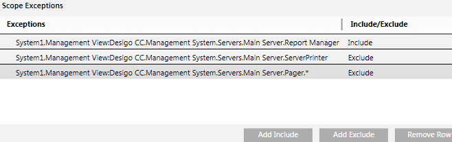

Configure the Scope Exceptions of the Scope Definition
Scope Exceptions allow you to configure Scope Exceptions Include and/or Exclude nodes in a Scope definition. They have precedence over Scope Rules.
- In the Scopes tab, use the Scope Exceptions section to further include/exclude individual objects, or to exclude entire subtrees: Drag-and-drop a node from System Browser into an empty space in the Scope Exceptions section. You can include multiple nodes in a Scope Exception Include node by selecting the nodes in the System Browser using CTRL or SHIFT and thereafter adding them to an empty area in the Scope Exceptions section using drag-and-drop. For selecting multiple nodes, ensure that you select the Manual navigation checkbox. After you drag-and-drop the nodes, select one of the following:
- Add Include. Include only the selected object in the scope.
- Add Exclude (node only). Exclude only the selected object from the scope.
- Add Exclude (subtree). Exclude the selected object plus all its children from the scope.
NOTE: Scope Exceptions override Scope Rules. This means an object added as a Scope Exception will be included even if there is a Scope Rule that excludes it. Conversely, an object or subtree excluded by a Scope Exception will be removed from the scope even if there was a Scope Rule that included it.
